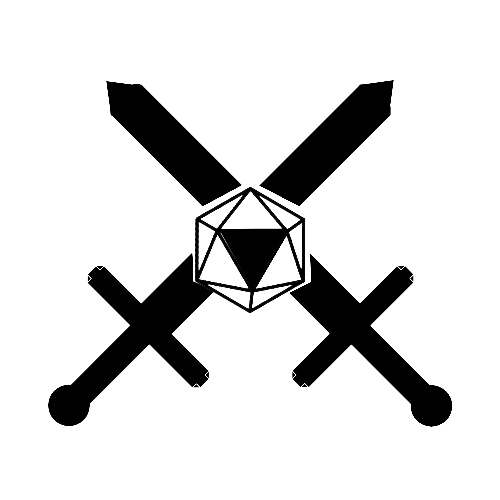

| Attributes |
|---|
| Strength |
| Dexterity |
| Acuity |
| Memory |
| Faith |
| Ego |
Every player character possesses each of these 6 Attributes. A number is assigned, higher numbers represent talent in all skills controlled by that Attribute. A value of 3-5 is considered about average for most Attributes up to a realistic maximum of around 12.
Attribute checks are made when your raw natural abilities are tested, for example you might be asked to roll a Strength check for trying to kick down a hardwood door. For every 3 points in an attribute, add 1d6 to your roll. Add the remaining attribute points not used to the roll. You always roll at least 1d6. Consult the table below for an easy visualization.
| Aspect | Maximum Pool Value |
|---|---|
| Physique | Strength + Dexterity |
| Intelligence | Acuity + Memory |
| Charisma | Faith + Ego |
Your Aspects function slightly differently. Each Aspect has an “Aspect Pool”, which is a number of spendable tokens possessed by your character. Your total Aspect Pool value is calculated by adding the two governed Attributes and subtracting one. For example, your Physical Pool would have a value equal to your Strength plus your Dexterity minus one.
Your Physical Pool is your health point total and gets reduced as your body takes damage, once it goes to zero you are in critical condition. You can draw from your physical pool to dodge attacks.
You draw from your Intellect Pool to use spells and whatnot, once it reaches zero you are rendered unconscious.
Your Charisma Pool can be drawn from for faith based abilities and abilities that manipulate conversations, once it reaches zero you lose control of your character and the GM takes over temporarily. If your character has greater Faith, they will become spineless and lose their spirits, doing whatever their adversary wants. If your character has greater Ego, they will lose control and become irrational, often hostile to other friendly PCs. Draining your Charasma Pool may be extremely deadly, or it may be harmless depending on the situation.
The three Aspect Pools basically mean you have three health bars, and it’s almost guaranteed that every character will have a fatal weakness. This makes combat tense and varied. Additionally, it has the bonus of treating combat, conversation, and tests of wit all in the same way.
There is a fourth pool that plays quite differently from the others. Your Inspiration Pool has no maximum value and no consequences for lowering to zero. Inspiration Pool Points are given sparingly to characters by the DM as a reward for nuanced, or badass character moments. You may spend 1 Inspiration Pool Point at any time to add a d6 to any one roll.
| Skill | Governing Attribute | Training |
|---|---|---|
| Endurance | Strength | |
| Athletics | Strength | |
| Reaction | Dexterity | |
| Sneak | Dexterity | |
| Acrobatics | Strength / Dexterity | |
| Warfare | Strength / Dexterity | Required |
| Knowledge | Memory | |
| Insight | Memory | |
| Survival | Acuity | |
| Perception | Acuity | |
| Crafting | Acuity / Memory | |
| Medicine | Acuity / Memory | Required |
| Engineering | Acuity / Memory | Required |
| Piety | Faith | |
| Attunement | Faith | |
| Channelling | Faith | Required |
| Intimidation | Ego | |
| Deception | Ego | |
| Solipsism | Ego | Required |
| Perform | Faith / Ego | |
| Pursuade | Faith / Ego | |
| Animal Handling | Faith / Ego | Required |
Reference the Attributes and Skills document for all of the skills. Skills all start at the value of zero. They can be increased in various ways depending on a character’s natural talents, profession, training, and life events. Every skill is associated with a certain Attribute. When making a skill check, add the governing Attribute to your skill before making the roll. You roll in the exact same manner as you would for an Attribute check, consulting the table below.
Before a skill check, the DM announces the difficulty of the check. Multiply the “difficulty” by two to get the minimum number a player must roll. A player may expend effort to decrease the difficulty by one level up to two times per skill check. Expending effort means that 1 point from the relevant pool will be used, emblems do nothing for skill checks. Additionally, a different player may expend an effort of their own to assist the one making the skill check, lowering the difficulty by one level.
Example: you want to jump over a large gorge, the DM says you have to pass an Acrobatics check with difficulty 6 since it is quite difficult. Your acrobatics skill is governed by the Physical Aspect, so you pick the higher of the two governing Attributes to use. Add the higher Attribute, let’s say a strength value of 7, to your acrobatics skill, let’s say 2, to a total of 9. Consulting the below table, a value of 9 corresponds to rolling 3d6. The difficulty of the check is 6, meaning you have to roll a 12 or better with 3d6. There is less than a 50% chance of success, so you spend 1 Physical Pool Point to reduce the difficulty by 1. Your ally spends 1 Physical Pool Points to assist you jumping across the gorge. Now the difficulty is only 4. You need to roll 8 or higher with 3d6, now there is closer to a 70% chance of succeeding.